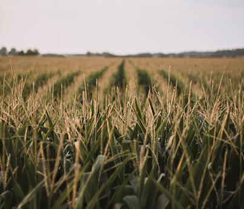

- 
it's pretty indicative that we are going through a transformative period that's only accelerating.
Organic continues to grow and we see the emergence of new innovations in protein like the Impossible Burger and Memphis Meats. Many traditional protein companies are investing because — even though lab-based protein sources could still be 5-10 years off, they could be significant disruptors and put pressure on corn and soybean markets in the U.S. if some of the livestock production shifts